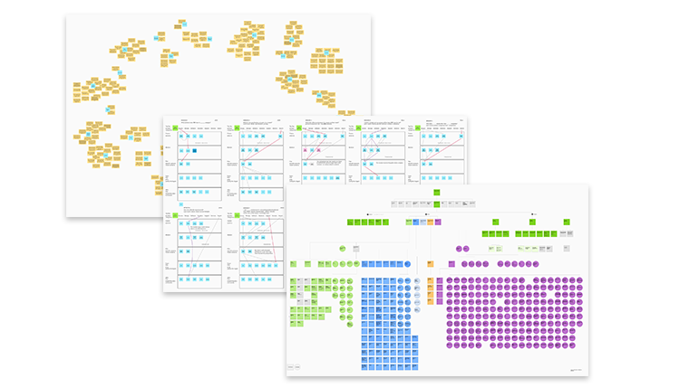

Companies need insight into user behavior but are often too busy and lack tools to conduct user research. As a result, they are forced to make costly product decisions without the confidence that user research can bring.
Gain insight into user behavior and needs to build products that delight clients.
As a UX researcher on multiple initiatives within the Marketing and Cloud team, I conducted quantitative and qualitative research on a variety of products.
I recruited and ran rounds of testing using RITE methodology on a new product for enterprise development teams on the IBM Cloud platform. This involved writing the research objectives, screeners, and tasks, and recruiting and interviewing participants with Respondent.io and UserTesting.com. Through this testing, we were able to collect valuable insights into relevant audience that shaped our product designs.


We were missing out on sales by poorly performing pages, notably on mobile versions of some high traffic web pages. I collaborated with our digital strategist to conduct remote unmoderated user testing to understand what users valued. We also made extensive use of heatmap data, and were able to significantly improve the conversion rates with redesigned pages.

Our content team needed to test messaging for a critical product launch. I adapted a new method of unmoderated testing with a target audience that collected sentiment on several marketing messages. From this testing, we launched a national marketing campaign for the launch of this key product in IBM's portfolio.

Our hardware marketing team had a series of expensive third-party demos that were not performing to expectations. This was a particular problem because of the pandemic and the lack of in-person sales interactions. I conducted qualitative interviews with business partners and identified opportunities to strengthen the value proposition of the existing solution. I also designed and ran unmoderated user tests with IT users to understand how they would use our demos. From this research we were able to recommend a series of improvements to make the demos more useful.

For our Cloud platform team, we needed to know what new functionality developers would be most likely to use if created. I worked with another researcher and we created a card sorting test for the top 28 additions. From this, we were able to work with the product manager to prioritize creation of one of the top-requested items.

Our marketing team was losing customers in the completion of some key forms. I created a visual format and tracked down quantitative data from a variety of obscure sources to display data in a way that our executives could use for decision making.